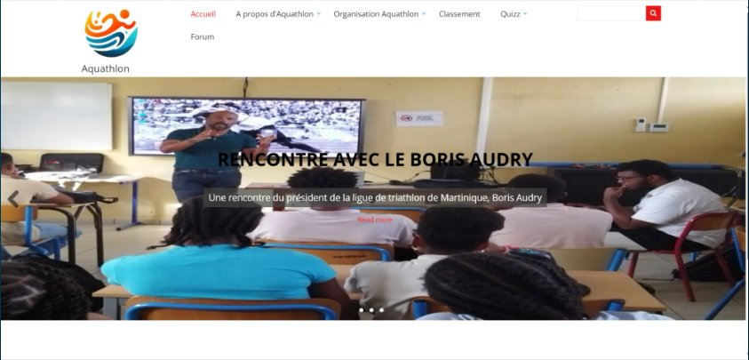
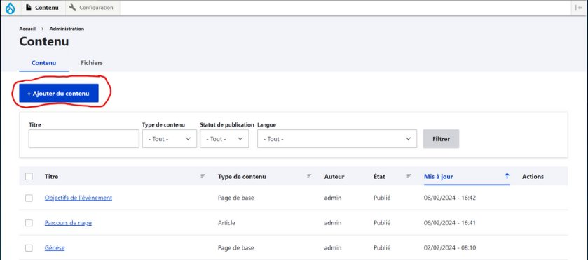
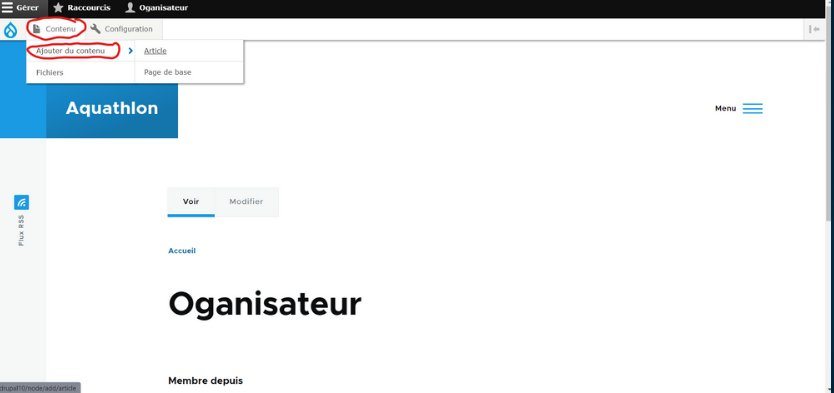

Mes Stages
Dans le programme du BTS SIO spécialisation SLAM, les étudiants sont requis de compléter deux stages pratiques au cours de leur formation, aboutissant à la rédaction d'un rapport final. L'objectif de ce rapport est de mesurer les compétences et connaissances développées par les étudiants au fil de ces expériences, en prenant en compte les thématiques traitées.
Pendant mes deux années de formation, j'ai eu l'opportunité d'effectuer deux stages, l'un au sein du CAMPUS de Schoelcher et l'autre au lycée Joseph Gaillard. Ces expériences m'ont offert l'occasion d'approfondir mes connaissances dans les langages de programmation tels que le PHP, ainsi que de développer mes compétences en gestion de projets et en résolution de problèmes.
Stage au lycée Joseph Gaillard
// Description du projet
Durant cette période de stage, mon objectif principal était le développement d'une application web pour l'événement Aquathlon, destinée à la gestion des inscriptions et au classement en temps réel. Le projet exigeait l'intégration et la synchronisation des données avec le site existant, ainsi que la création d'un tableau dynamique pour les professeurs, leur permettant de visualiser les différentes catégories de l'événement.
// Captures d'écran



// Tâches réalisées
- Analyse des CMS (Drupal, WordPress, Sport Région) pour déterminer la solution la plus appropriée au projet.
- Approfondissement de l'analyse de Sport Région et Drupal, avec sélection finale de Drupal pour sa flexibilité.
- Rencontre avec le client pour clarifier les attentes et définir l'arborescence du site.
- Formation autodidacte sur Drupal et acquisition d'une compréhension solide du CMS.
- Préparation et présentation d'un prototype de l'application web au client et aux parties prenantes.
- Rédaction d'un guide utilisateur pour Drupal et consolidation des informations dans le rapport final.